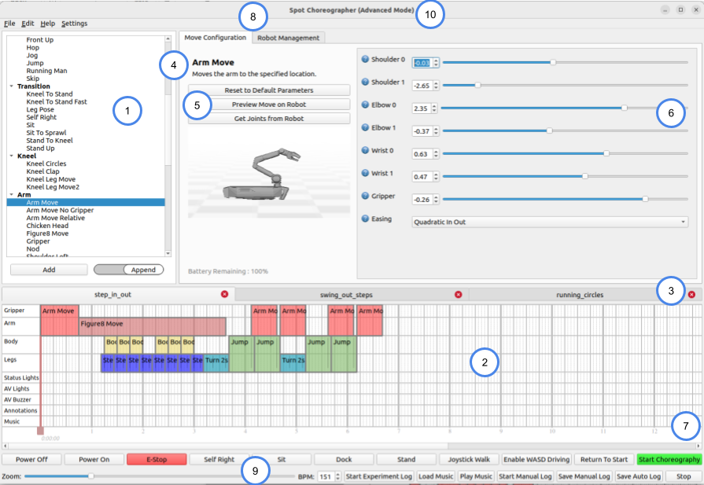
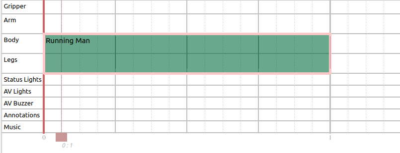
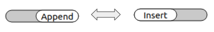
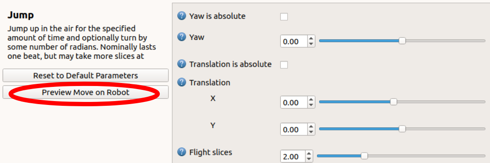

Boston Dynamics Choreographer Developer Guide
Choreographer is a tool for authoring dances and executing them on robots. It lets you construct choreography sequences from a list of predetermined and customizable moves. You simply have to add moves to the choreography timeline, adjust move parameters as needed, and press “Start Choreography.”
Running Choreographer
Choreographer is an executable program you can download from the Boston Dynamics Support Center (login required).
To run the program, double-click the executable. Choreographer is supported only on for Windows and Linux platforms.
Choreography safety
When testing your choreography sequence on a robot, always keep in mind basic safety procedures. Make sure there is plenty of space around your Spot and ensure that neither you nor anyone else approaches the dancing Spot. Never approach your Spot unless its motors have been powered off. If working with multiple robots, it is recommended to also keep them far from each other when possible.
Beginner and advanced modes
Choreographer provides as much design freedom as possible. A consequence of this freedom is that the robot cannot perform some combinations of moves, parameters, and other settings under all conditions.
Beginner mode provides a more controlled experience that is more likely to produce reliable results. This mode has smaller parameter ranges, which allow for less energetic but generally more reliable dances. In beginner mode, some of the more dynamic dance moves have been removed from the Moves List. Beginner mode does not support animated dance moves.
By default, Choreographer starts in Beginner mode. You can enable it by using the --restricted argument when starting Choreographer from the command line. Changing to Beginner mode from Advanced mode takes effect the next time you open Choreographer.
Switch to Advanced mode by selecting the Load in Advanced mode checkbox in Choreographer’s welcome menu. You can also navigate to Settings and select Load in Advanced mode which takes effect next time you open Choreographer. Note that if you create a dance in Advanced mode, Choreographer may not be able to load it while in Beginner mode if the dance’s parameters are outside its reduced range.
It is highly recommended that Choreographer users start in Beginner mode until they are comfortable using the robot and creating/executing choreographies!
User interface overview
 
The Choreographer interface consists of the following important key sections/buttons:
Moves List - Listd of predefined stock moves and animation moves sorted by general category such as “Body” or “Transition.”
Dance Timeline - The main user interface area of Choreographer. The timeline shows a representation of your dance over time. Each move is a different block. Blocks can be edited to set or change move parameters. Blovks can be relocated on the timeline by clicking and dragging or copied and pasted to a new location on the timeline. They can be stretched or shrunk if the move parameters allow it.
Dance Tabs - Multiple choreography sequences can be opened at once and will appear as different tabs above the timeline.
Move Name - When you select a move in the Moves List its name and description will appear here.
Robot Preview - A preview of the robot’s body and arm during your selected move. Note that this section only appears for select moves that directly position the body of the robot or moves that control the arm.
Move Parameters - When you select a customizable move, its adjustable parameters appear in this area. Modify the parameters to adjust how the robot acts during this move. Be sure to test and make sure the robot can handle your parameters! Sometimes more extreme parameters can be too much for the robot during high or low BPM songs, so if a combination of parameters does not work, adjust them until they do for your situation. Tap the blue question mark near the parameter name to see a description of the specific parameter.
Robot Controls - The robot control buttons are used to send commands to any robots connected to Choreographer, including starting and stopping your dance and powering on or off your robot’s motors. Note: This row is disabled when Choreographer is not connected to any robots, as shown.
Music Controls - Music controls allow you to load and play a song during your robot’s dance, manually adjust the BPM of your robot’s moves to match your song or the volume of the music, and stop the music and the robot’s dancing if one is connected.
Move Configuration/Robot Management Tabs - Toggle between the move configuration tab, which displays move name and parameters, and the robot management tab, which displays all active robot connections and health statistics.
Mode Indicator - Indicates whether Choreographer is running in “Beginner” or “Advanced” mode. The title provides an indicator to help remember which mode the application is loaded in. Use the Settings menu to switch modes when Choreographer is re-opened.
Add/Disconnect Buttons - Dynamically change which robots are connected and controlled by Choreographer.
Robot Connections - Shows robot hostname and other information regarding the robot(s) currently connected to Choreographer. The checkbox indicates whether or not the robot is being controlled. Example: When unchecked, pressing robot control buttons such as “sit” will do nothing to the unselected robot.
Dance Selector - Choose which of the open choreographies the robot will execute when both checked (in the “Selected” column) and start choreography is clicked.
Health Stats - Columns which show the power state (on/off) battery state of charge, and any faults for each robot.
Tracks
Choreographer has several tracks, each describing some aspect of Spot’s behavior.
The Legs, Body, Arm, and Gripper tracks describe the physical motion of the robot.
The Lights track describes the behavior of the lights near Spot’s front cameras.
The Annotations track modifies the behavior of the other tracks.
The Music track shows the audio to be played by the Choreographer application itself (not played by the robot).
All dance moves control one or more tracks. Moves that control any of the same tracks cannot run simultaneously. Moves that use different tracks can be run simultaneously. This modular approach to defining behavior helps make it easy to produce a wide variety of behaviors from a manageable number of component moves.
Slices, beats, BPM, and measures
Choreographer divides time into slices represented by the thin dashed vertical lines in the timeline. All moves take an integer number of slices. For convenience, we consider 4 slices a beat and adjust the pace of the dance by setting the BPM (Beats Per Minute) in the Music Controls bar. Beats are delineated by the medium-thickness vertical lines on the timeline. Every 4th beat is numbered and marked with a thick vertical line.
For a song with a 4/4 time signature, a slice corresponds to a 16th-note, a beat to a quarter note, and the thicker lines to a measure or whole note. For songs that are not 4/4, the thicker lines can be ignored.
Some moves take a fixed number of slices. Other moves take a fixed amount of time so the number of slices will depend on the BPM. Some moves are adjustable, but of those some have maximum or minimum durations. For example, this “Running Man” move has been extended from the default number of slices. It controls the legs track for the first 16 slices (4 beats; 1 measure) of this sequence:

Dance timeline
The dance timeline portrays the choreography sequence on a grid. The rows of the grid represent the various Tracks or aspects of the behavior (see Tracks section above). Time is represented from left to right with the columns representing individual slices (see Slices, Beats, BPM, and Measures section above).
A dance sequence consists of any number of dance moves. Each move will be represented on the timeline by a rectangle. The left and right edges of the rectangle give the start and stop time of the move, so the width represents the duration. The vertical extent of the rectangle shows which tracks the move controls.
Moves that are stacked vertically occur simultaneously, each controlling a different aspect of the behavior to produce some combination. Moves that are arrayed horizontally occur in sequence, one after the other.
Adding moves
There are different methods for adding moves to the timeline.
You can single click the move in the Moves List. This opens the move name, description, and parameters in the Move Configuration tab, but does not add it to the timeline.
Use the up and down arrow keys to navigate between different moves in the Moves List once one is selected. While you have a move selected in the Moves List, you can adjust its parameters in the Move Parameters section.
Once the parameters are adjusted to the desired values, the move can be added to the dance timeline by any of the following methods:
Pressing the Add button beneath the moves list. This appends the move to the end of the timeline with any parameter changes.
Double-clicking the move name in the Moves List. This appends the move to the end of the timeline with any parameter changes.
Click the toggle to go from Append to Insert (under the Moves List). In Insert mode, hovering over the timeline shows a ghost move block. Clicking the block adds the move to the timeline with any parameter changes. Hit Esc to exit insert mode or press the toggle again to return to Append mode

Drag a move from the Moves List into the timeline with any parameter changes. As with insert mode, a ghost move block appears to help position and drop the move onto the timeline.
Modifying move blocks
Once a move is added to your timeline, it can be dragged left or right to the appropriate time. Some moves can be resized by clicking and dragging the edge of the move block. Hover over the edge of the move: If it can be resized the cursor changes to an arrow. The move automatically enforces any requirements it has for minimum or maximum duration. Note: To help with longer moves the timeline can be zoomed in/out using the Zoom bar below it.
Modifying move parameters
To modify move parameters, click the move block on the timeline to select it. Modify the move parameters that appear in the Move Parameters section. Each move has different parameters. Some moves are not configurable.
Refer to the Choreography moves reference for descriptions of each move and move parameter. Numerical parameters can be modified by editing the text field, adjusting its slider, or pressing the Up or Down arrow buttons. Boolean parameters can be changed by checking or unchecking the box. Enum parameters are changed by choosing new values in the drop-down menu.
Move parameters can be modified before being added to the timeline. Select a move in the Moves List to edit the move parameters. When the move is added to the timeline, it will contain these parameter modifications.
Robot preview
The Robot Preview pane appears for applicable moves. You can adjust the camera position and angle of the robot preview pane to get a better view of your move. Use the scroll wheel to zoom in and out. Click and drag to pan the camera. Right-click and drag to rotate around the preview robot.
Selecting multiple moves
To select multiple moves, click an empty space in the timeline and then drag over move blocks to select them. To deselect, click an empty space on the timeline. Note that you can only edit the parameters for one move at a time.
Copying, pasting, and deleting moves
Selected moves can be copied and pasted to locations on the timeline. Moves pasted into a choreography sequence are positioned as close as possible to the original move’s location. Moves can be copied and pasted between different open dance tabs.
Right-click a single move or group of selected moves and choose Clone to copy the selected moves into the currently opened dance. These moves are inserted as close as they can fit into your choreography sequence.
To delete moves, select one or more moves and press Delete or Backspace or select Delete on the Edit menu, or right-click on a move and select Delete on the Edit menu.
Loading music
To test a choreography with real songs, use the music player included with Choreographer to load and sync music to your dance.
To use a music clip, press the Load Music button in the Music Controls section of Choreographer. This opens a music file to be played with the dance. Note that a reference to this file will be saved in your Choreographer Save File, so you will only need to do this process once per save.
Once a dance is loaded, preview it by clicking Play Music. Stop previewing by clicking Stop. The Play Music button does not initiate a dance on any connected robots. Music will play from the computer running Choreographer. Music volume can be adjusted using the slider at the bottom in the music controls section.
After loading a dance, you must manually set the BPM (Beats Per Minute) of your dance to synchronize with the song. Online tools are available to help you calculate the BPM of any song. Choreographer includes a metronome to calculate a song’s BMP.
Red slider
The red slider defines where within the sequence Spot should begin execution. It also indicates when the audio begins playing. The red slider defaults to the beginning but can be moved to start from the middle. This can be useful for testing just a portion of a long sequence.
Any moves that start before the slider will be skipped even if they are scheduled to complete after the slider. The line drawn at the center of the slider shows the location of the slider on the timeline, as shown in the image below. The slider can be moved by clicking on the colored boxes and dragging it to the desired location.

Previewing moves
With a robot connected to the Choreographer, you can preview dance moves before adding them to the timeline. Select a move from the Moves List and modify the move parameters. Press Preview Move. This cancels all current dances and actions on the robot and causes the robot to perform the one move you have selected. This is a great way to test out parameter modifications before adding a move to your timeline.

Performing Choreography sequences
Click Start Choreography in the Robot Controls bar to upload the choreography that is currently selected in the Robot Management tab. By default, this is the currently open choreography tab. The robot starts to execute the routine with music at the same. A minimum three-second delay ensures that the music and the dance routine begin at the same time. To adjust this delay, use the --delay DELAY_IN_SECONDS command line argument when starting the Choreographer application from the command line.
Note: If the robot is not started in the proper position (sprawl, sit, stand) the music and choreography start timing will likely be out of synch.
To stop a choreography routine (or stop the music from playing if no robot is connected/executing a choreography) click Stop to freeze the robot with all four feet on the ground and stop the music. In an emergency, click E-Stop or Power Off instead.
Saving and loading Choreography files
To save a Choreographer routine, press Ctrl+S or go select Save from the File menu. Your routine will be saved in protobuf text format, which you can then open and easily read with your own scripts. To load a Choreographer file press Ctrl+L or select Load Choreography from the File menu.
To append an existing choreography sequence to the end of your current dance, select Append Choreography from the File menu, or press Ctrl+E. Choreographer automatically adds all of the move blocks from the saved file to the end of your current routine. This is particularly useful if you want to construct a choreography sequence from smaller premade sequences.
Keyboard controls
Choreographer has specific hotkey mappings available for common editing actions. Access the table of available hotkeys by selecting Hotkeys Documentation from the Help menu.
Sequence editing
| Key | Function |
|---|---|
| i | Enter insert mode |
| Esc | Exit insert mode |
| p | Play music |
| Shift + Click | Select multiple moves, adding each one to the selected group when clicked. |
| Left/Right Arrow Keys | Nudge a move (or group of selected moves) left/right by one slice in the timeline. Cannot cross other moves with nudging; this can only be done when dragging a move (or group). |
| Shift + Left/Right Arrow Keys | Expand a move on the left/right side by one slice if possible. This only works when a single move is selected (and not a group of moves). |
| Ctrl + Left/Right Arrow Keys | Shrink a move on the left/right side by one slice if possible. This only works when a single move is selected (and not a group of moves). |
| Ctrl+C | Copy the move (or group of selected moves). |
| Ctrl+V | Paste the copied move (or group of selected moves). |
Robot control
| Key | Function |
|---|---|
| Space | Stop the robot (and music, if playing) |
| k | Power on the robot. |
| l | Power off the robot. |
| y | Stand the robot up. |
| x | Start the choreography. |
| [ | Sit the robot down. |
| ] | Self-right the robot. |
| v | Enable WASD driving. |
| b | Enable joystick mode. |
WASD driving mode
| Key | Function |
|---|---|
| w | Walk forward |
| a | Sidestep left |
| s | Walk backward |
| d | Sidestep right |
| q | Turn left |
| e | Turn right |
Command-line arguments
Command line options for starting Choreographer from the command line:
| Argument | Description |
|---|---|
| -h, --help | Print this information to the console. |
| --hostname HOSTNAME | Hostname or IIP address of robot(s) to initially connect to |
| --username USERNAME | User name(s) of the account(s) to get credentials for when initially connecting to one or more robots. |
| --password PASSWORD | Pasword for the account(s) when initially connecting to one or more robots. |
| --restricted | Load Choreographer in Beginner (Restricted) mode (also available through the Help menu) |
| --delay DELAY | Delay time in seconds after pressing the Start Choreography button before starting the sequence. Defaults to 3 seconds. |
| --not-vebose | Prevent printing error messages to the console. |
| --obs-padding DISTANCE | Sets the obstacle avoidance padding in meters. Note: Obstacle avoidance is not available during most dance moves. |
| --estop-timeout TIME | Sets the duration of the E-Stop timeout in seconds for how long between losing communication with the robot and when the robot sits down and powers off. Defaults to 9 seconds. |
Command line hostname, username, and password arguments can be especially convenient when repeatedly connecting to the same large set of robots. The following example connects to three different robots using three different sets of login credentials.
./choreographer --hostname hn1 --username un1 --password pw1 --hostname hn2 --username un2 --password pw2 --hostname hn3 --username un3 --password pw3